What the mapping set out to answer
- In what order did the domes erupt?
- What textures does each dome preserve?
- How efficiently did the magma degas on ascent?
- Was the eruption effusive, explosive or both?
Setting
Panum sits on the Walker Lane, where dextral Pacific–North America motion meets Basin and Range extension. E–W extension and subsidence at Long Valley Caldera let N–S dikes rise and build the Mono–Inyo chain. Panum formed in the North Mono eruption about 600 years ago, fed by a N–S dike beneath the northern 6 km of the chain. Magma met groundwater-saturated alluvium, driving hydrovolcanic, sub-Plinian to Plinian activity. No lake or wind-blown beds separate the pyroclastic layers, so the eruption lasted only months.
Eruption sequence
- Phreatic blast. Deposits the North Mono airfall tephra.
- Throat clearing. Massive unsorted breccia, lapilli, accidental sediment and Sierran clasts.
- Pyroclastic flows and surges. Lapilli gravels, laminated pumice and cross-bedded ash with block bombs, common on the SW dome; the triangular facet on the west tephra ring dates from here.
- Phreatic explosion. Blasts out glassy rhyolite breccia and breadcrust pumice, collapses the inner crater and sends the Panum block-and-ash flow N–NW.
- Pyroclastic flow. A layer of ash and lapilli.
- Final extrusion. Flow-banded obsidian, pumice and stony rhyolite build the North Dome and its tephra ring.
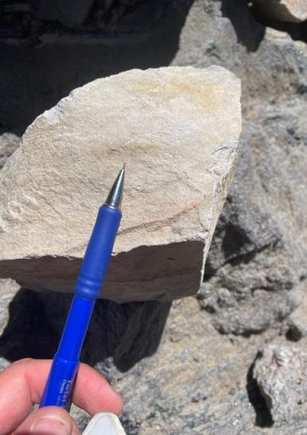
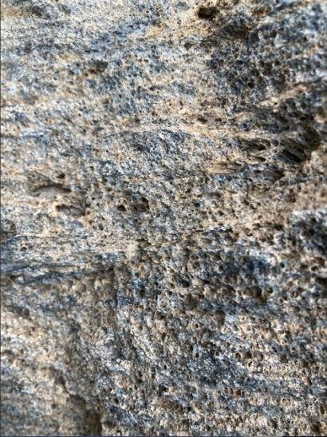
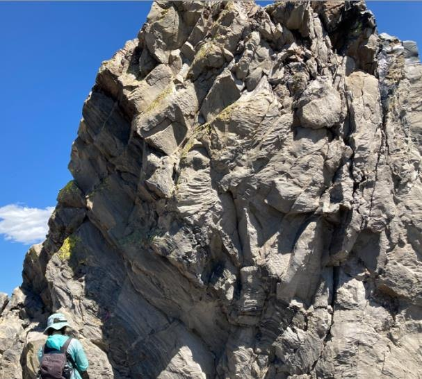
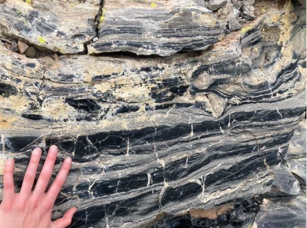
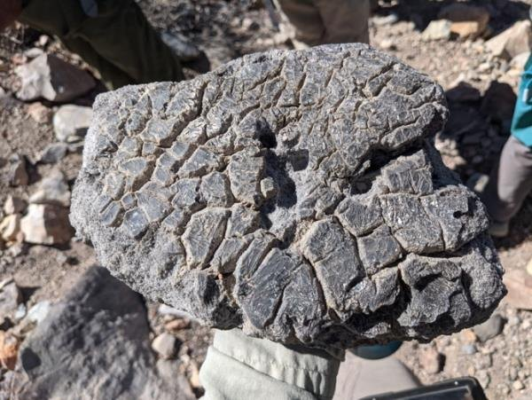
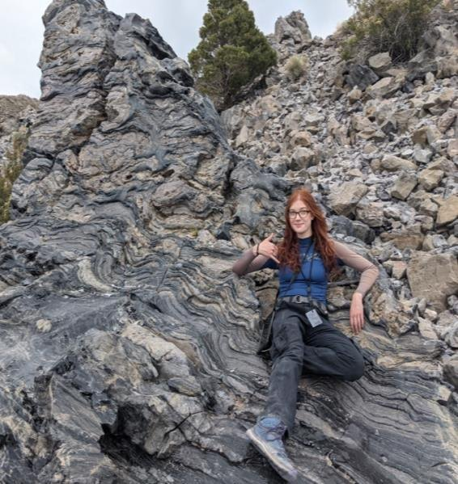
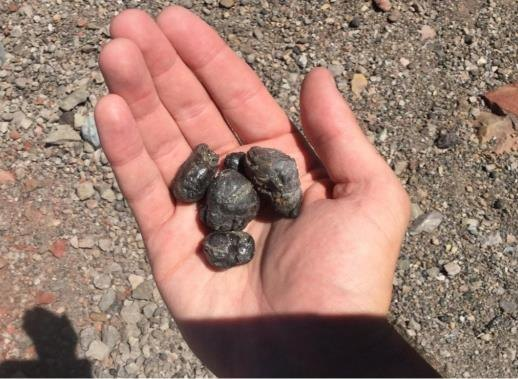
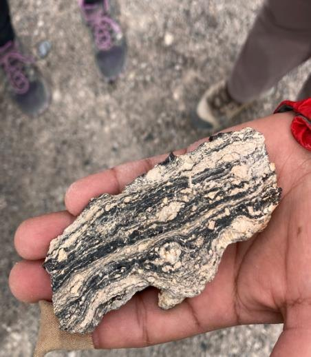
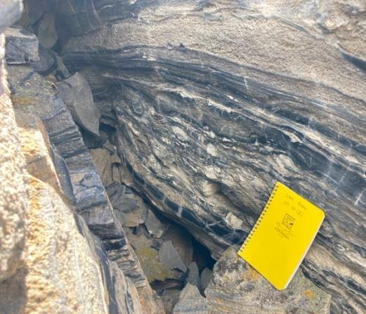
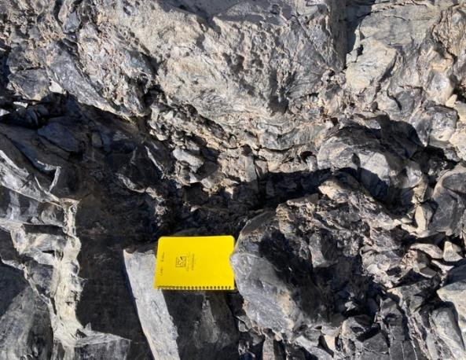
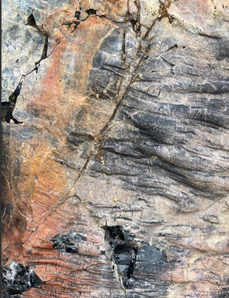
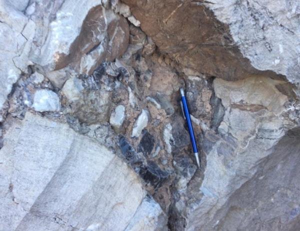
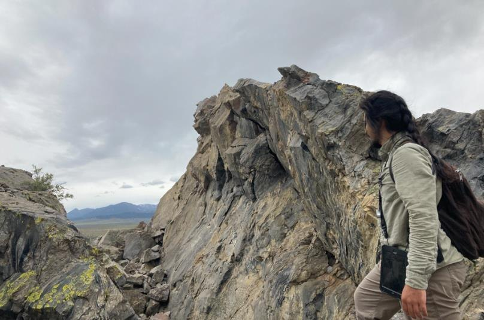
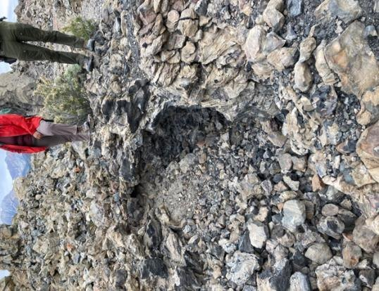
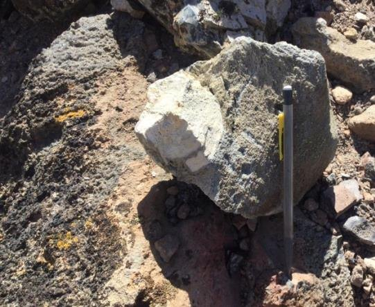
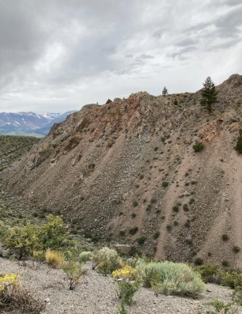
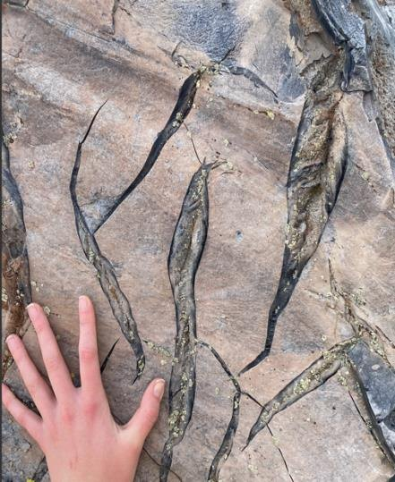
Four domes, oldest to youngest
The SW and East domes are shattered and pushed to the crater flanks. The North Dome diapir split the South Dome along its fissure, stretching the flow banding into boudins I.
A record of degassing
Domes grade upward from massive obsidian at the base, through microvesicular stony rhyolite, to pumiceous rhyolite: vesicle size tracks how much gas escaped. Fast depressurization froze obsidian blocks in the South Dome graben, some devitrified H. Red-orange fumarolic staining K marks intense vent degassing, and breadcrust rinds E and Pele’s tears G record gas escaping from quenched melt.
Effusive and explosive at once
Ejecta thrown steeper than 45° fell back into the fissure and was welded into new lava as backfill breccia C. Spines cracked as they extruded and ash blew into the cracks as tuffisite L. Bombs sit trapped in flows O, and spatter cones beside the South Dome fissure N erupted alongside small tephra cones.